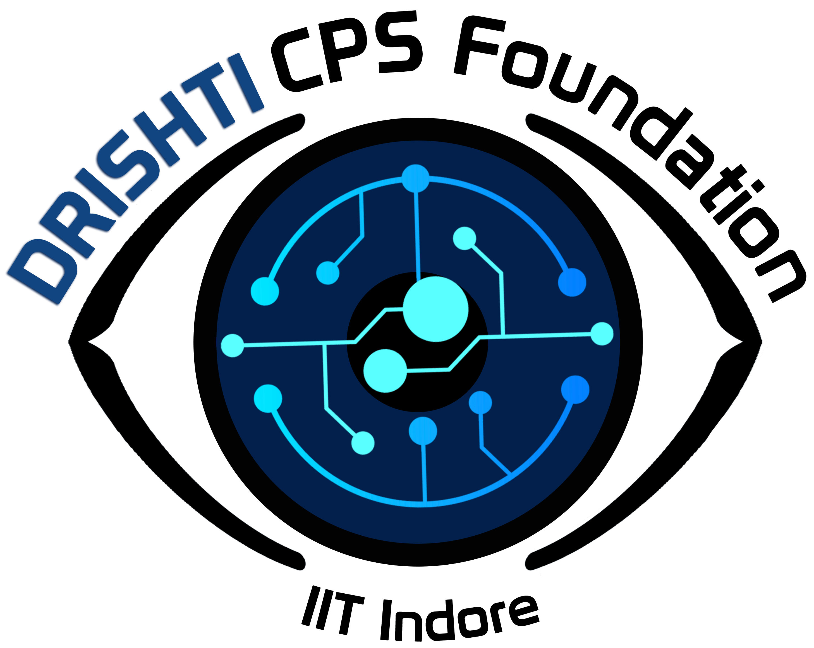
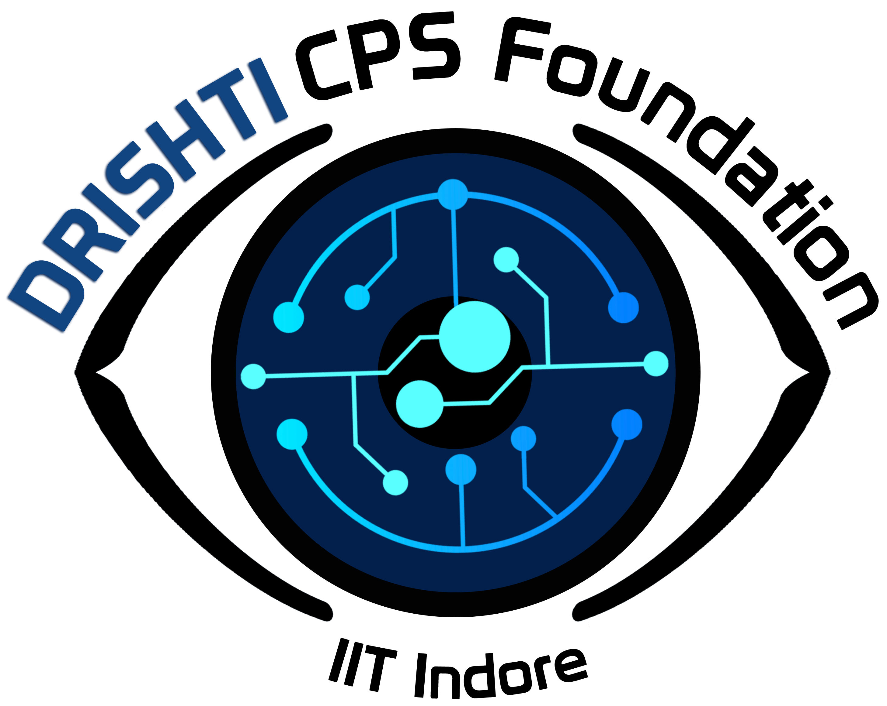

HOME
Meet the core members of the project.


About
Aim: To develop a flexible wireless electronics mask comprehensive breath monitory and respiratory assessment
Expected outcomes-
1.Prior reviewed Journal / Conference Publication.
2. Development of different Machine Learning and Deep Learning models for analysis and visualizations of breath signals.
3.Mobile Application displaying respiratory vitals and the type of breathing data.
Publications
We regularly publish research papers in top journals. Explore our latest work here.
Students
Our students from different disciplines gather here to contribute to the research.
 Nithin
Nithin
Pursuing B.E. in AIML
MSRIT
Building of the model
 Mithali. S. Channal
Mithali. S. Channal
Pursuing B.E. in Medical Electronics
MSRIT
Dhavala. T. S
Pursuing B.E. in AIML
MSRIT
Amogh Shastry
Pursuing B.E. in Medical Electronics
MSRIT
Projects
Explore our ongoing and completed research projects.
Activity based analysis (normal, deep. walk-1, deep normal walk, run-2, diff algos- eg: deep, walking- one CNN model dpd.)
Analysis of left and right nostril breathing
ANanlysis of parametrization for left and right nostril breathing study
Datasets
Find valuable references and resources for your research here.
*Data aq
volunteer data acq-
1.MSRIT(around 50 datasets)
2. Atmabodh Yoga centre (around 102)
*BIOPAC SETUP for validation of mask setup
*Ethical clearnace <(add references- usme reserch papers)
Contact Us
Want to collaborate or learn more? Reach out to us via email or social media.
msrit.edu
9xx456xx78